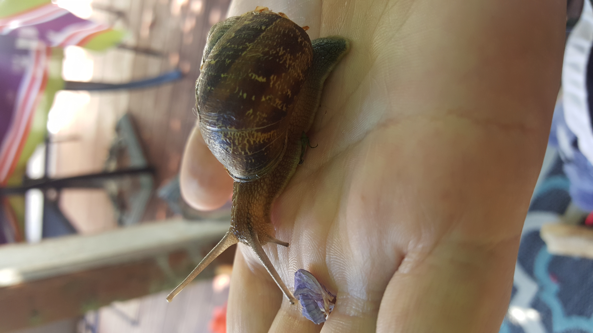

Fun Snail Facts!
- Snails are classified as gastropod mollusks.
- You can use the mucus of gardens snails as a face cream for wrinkles, spots and scars.
- The shell of a snail grows too, since they do not change shells like hermit crabs.
- Snails move at the speed of 0.5-0.8 inches per second.
For more snail information, visit snail-world.com.
